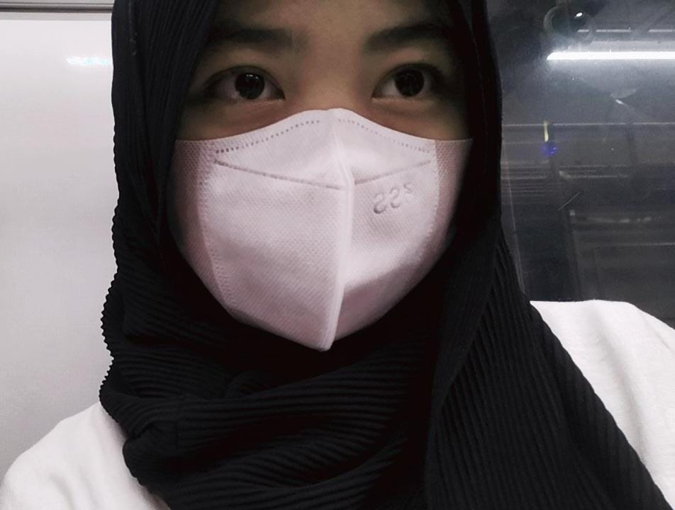

|  | Nama | : Alifa Azzahra |
| Jenis Kelamin | : Perempuan |
| Tempat dan Tanggal Lahir | : Jakarta, 06 Mei 2006 |
| Agama | : Islam |
| Tinggi Badan | : 156cm |
| Berat Badan | : 45kg |
| Alamat | : Jl. Kayumanis 9 RT. 04/RW. 09 NO. 56 |
| Nomor Telepon | : +62 895-3233-18668 | : azzahraalifa534@gmail.com |
| Tahun | Tempat Pendidikan |
| 2022-Sekarang | SMK Negeri 40 Jakarta (Jurusan RPL) |
| 2019-2022 | SMP Negeri 14 Jakarta |
| 2013-2019 | SDN Palmeriam 03 Pagi |